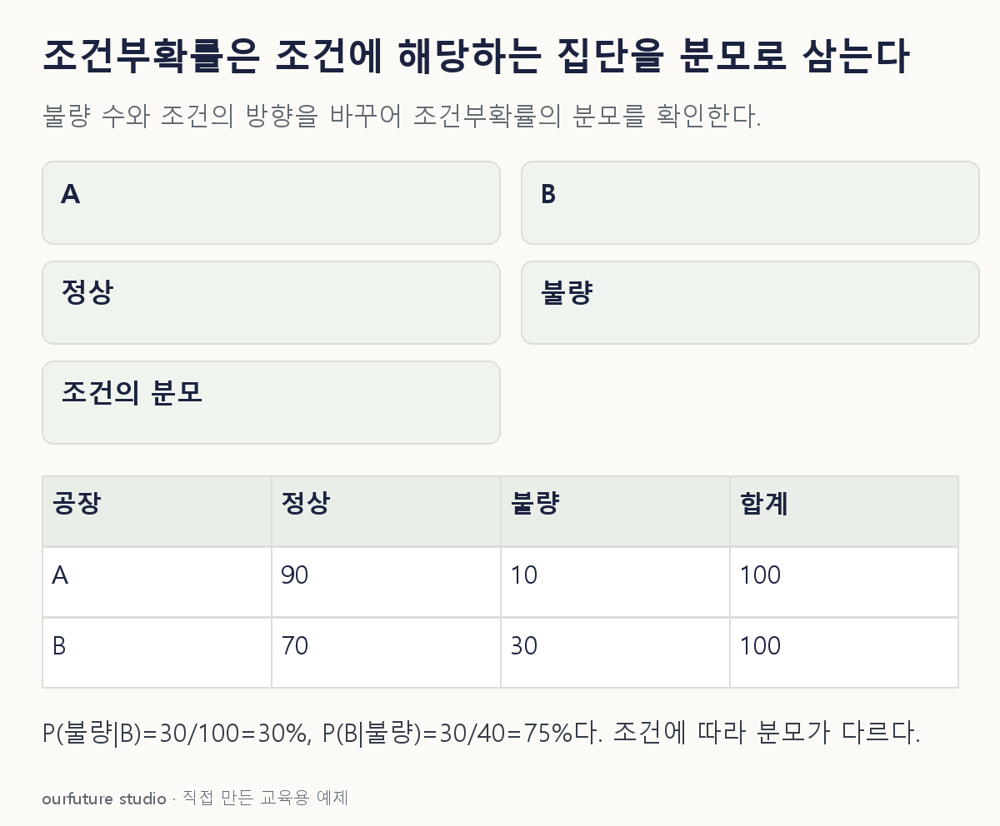

조건을 바꾸며 확인하기
각 공장 생산100개와 전체 생산품의 균등 선택을 가정한다. 미래 품질이나 공장의 인과효과를 확인한 결과가 아니다.
설명 그림과 비교하기
아래 그림과 표는 고정된 설명 예제입니다. 기본·변형 중 어떤 조건인지 캡션을 읽고, 바꾼 입력의 결과는 계산 칸에서 확인하세요.

같은 문제를 직접 골라 보기
A 생산100개 중 불량10개, B 생산100개 중 불량30개다. 전체 생산품에서 균등하게 고른 제품이 불량이라고 확인됐다.
조건을 더 바꾸면?
생산 수는 같고 B의 불량 수만 10개로 바꾸면 불량품이 B에서 왔을 확률은?
변형 풀이 확인
50%
전체 불량이 10+10=20개이고 그중 B가 10개이므로 10/20=0.5다.
무엇을 안 뒤의 확률인지가 분모를 정한다.